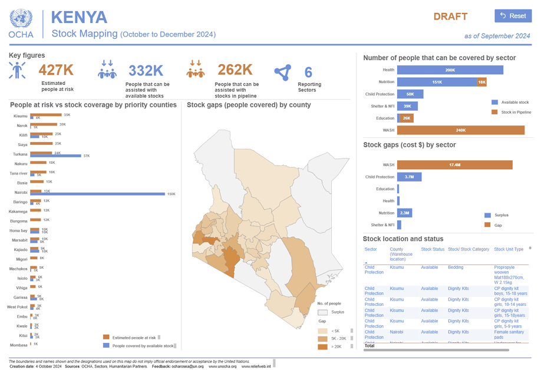

Stock Mapping

Summary
Stock mapping is a data visualization tool used to identify “who has what, where” in terms of emergency supplies. It helps humanitarian agencies coordinate logistics, avoid duplication, and respond more efficiently to crises.
Stock mapping dashboards typically include:
- Interactive maps showing warehouse locations and stockpile contents
- Filters by:
- Item type (e.g., tents, hygiene kits, medical supplies)
- Organization
- Region or country
- Sector (e.g., health, shelter, WASH)
- Tables and charts summarizing:
- Quantities of items available
- Stock movement (in/out)
- Replenishment schedules
- Icons and infographics for quick visual reference
- Links to logistics partners and transport options